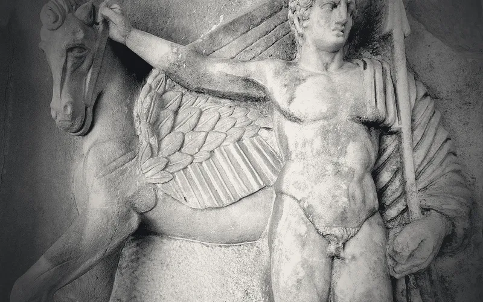

A carta
O rei Preto mandou Belerofonte à Lícia levando uma carta fechada. Nela estava escrito para matar o portador. O rei da Lícia, então, o enviou contra a Quimera, certo de que ele não voltaria.
Homero, Ilíada, canto VI
HERÓIΒελλεροφόντης
Herói de Corinto, neto de Sísifo. Domou o cavalo alado Pégaso com uma rédea de ouro dada por Atena e, montado nele, matou a Quimera.
A Quimera era minha irmã, filha de Tífon e Equidna como eu. Não guardo rancor: ela cuspia fogo em todo mundo, inclusive na família.
O rei Preto mandou Belerofonte à Lícia levando uma carta fechada. Nela estava escrito para matar o portador. O rei da Lícia, então, o enviou contra a Quimera, certo de que ele não voltaria.
Homero, Ilíada, canto VIAtena deu ao herói uma rédea de ouro para domar Pégaso. Do alto, fora do alcance do fogo, ele matou a Quimera com flechas.
Píndaro, Olímpica XIII; Apolodoro, Biblioteca IIOrgulhoso, Belerofonte quis subir ao Olimpo montado em Pégaso. O cavalo o derrubou, e ele terminou a vida vagando sozinho, longe dos homens.
Píndaro, Ístmica VII; Homero, Ilíada, canto VI“Primeiro mandou-o matar a Quimera invencível, de raça divina e não humana: leão na frente, serpente atrás e cabra no meio.”
Homero, Ilíada, canto VI (tradução livre)